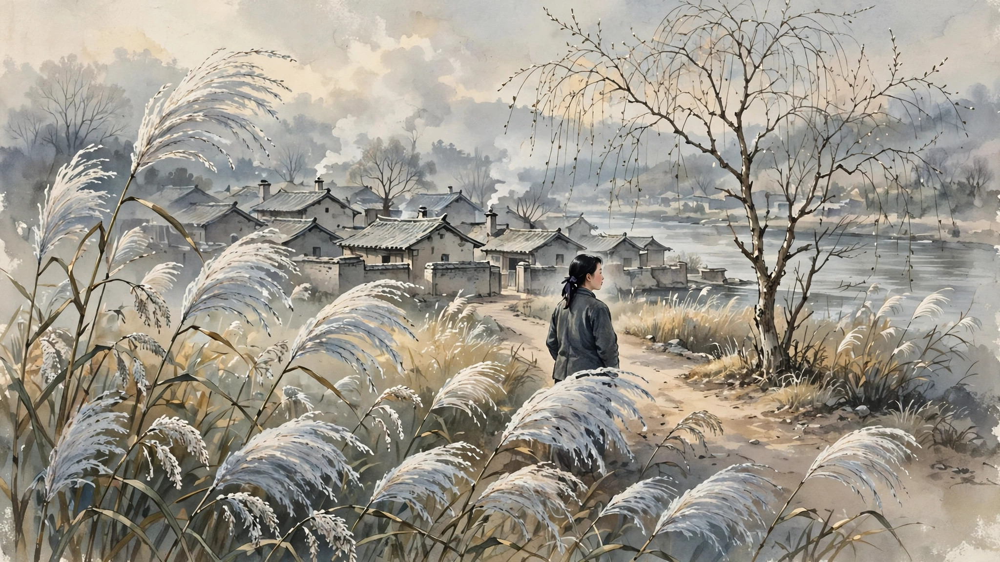
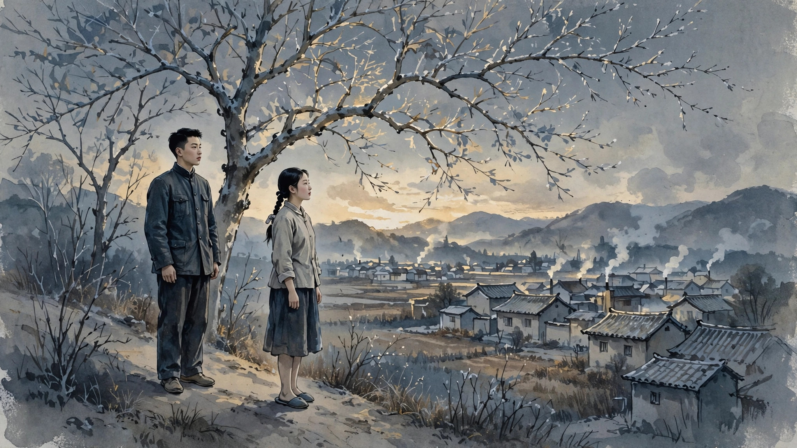

《冬天里的春天》读后感
去年到今年用碎片时间看完的一个长篇。茅盾文学奖作品，背景跨越“解放”前夕、文革和文革后初期三个时代。从时代背景看，本以为是“红色文字”作品。其实看下来，意识形态类的东西并不算多，文学性还是很不错的。即便以现在眼光来看，作品的文学性也是很强的。整体质量来说算是能载入史册的文学经典了。

作品中的人物不多，但不管是主角还是配角，都塑造得很成功，很鲜活。看得出作者是有很丰富的人生阅历和很细致的观察力以及很强的表现力的。作品的主线是围绕女主芦花被人开黑枪所害这一悲剧带来的长达数十年的谜团。这个谜团直到结局才完全解开。从这点来说，说它是是悬疑小说也不为过。但作品的成功远不在此，而在于人物和人性的生动刻画。男主于而（二）龙和女主芦花在战争年代的真挚爱情令人动容和难忘，而造成芦花被害这一悲剧的反面角色从始自终的恶更让人悲愤交加。其他主要配角也不乏令人印象深刻的。如叶姗和四姐（姗姗娘），这一对苦命的母女，一直被人利用乃至残害，纯粹的善良结果就是纯粹的愚蠢。其他配角，如于而龙之女于莲、其子于菱其妻谢若萍、老知识分子廖总等等，都有符合时代背景和人物个性的成功描写。整部书的叙事结构是在几个时代之间切换，但一点也不突兀，相反逻辑清晰，链接自然。

无论从文学性、叙事流畅性和情节连贯性来说 ，作品的质量都非常之高。但我个人觉得也有令人遗憾之处，即作品的结局不太有力。虽然开放式结局给人遐想的空间，但对于整本书丰富而立体的叙事结构以及对人物全方位的深入刻画而言，结局略显仓促和草率了。不是说一定要好人战胜坏人之类的happy ending，但站在读者的角度，一路深受男女主悲剧爱情“洗礼”的他们，也需要一个相对公平和明确的结局让心情平复（如果不一定是愉悦的话）下来，即西人所谓的closure吧。原书结局无疑会让读者留下一些遗憾甚至惆怅的感觉的。
总之，这本书可以评为我去年看过的年度最佳虚构作品。可惜的是我是在这么多年后才看到。这也说明，好的作品的确经得起岁月的考验。